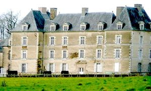
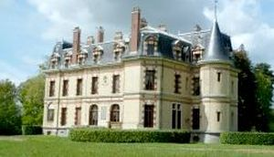
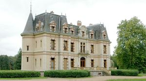

Recensement Jean-Claude Truffet
| Département | 35 — Ille-et-Vilaine |
| Canton | Le Rheu |
| Commune | Mordelles |
| Type d'édifice | Château |
| Période d'origine | XVIII-XIX |
| Coordonnées GPS | 48° 04' 47" Nord, 1° 53' 14" Ouest Chesnayes |



deux châteaux dans cet article à Mordelles; Artois et Haichois. La HAICHOIS, sur le site ancien d'un édifice détruit, un château neuf est construit en 1888 pour le comte de Toulouse-Lautrec et son épouse, Emilie de la Haichois. L'architecte et décorateur réalise en particulier l'intégration de Jean-Marie Huchet, entrepreneur à Rennes, est chargé des travaux. Le colombier de même époque est conservé au sud du château. Les écuries sont construites peu avant le château ; le parc à l'anglaise, la ferme et un potager clos de murs de terre sont également entrepris à cette période. Le château est implanté dans un parc paysager, au nord-ouest d'un étang. L'édifice présente un plan allongé et massé ; le corps principal est flanqué de plusieurs pavillons saillants sur la façade principale, d'un avant-corps polygonal sur la façade sud et d'une tour circulaire à l'est. Le bâtiment comprend un étage de soubassement avec cour à l'anglaise à l'Est, un rez-de-chaussée surélevé, un étage carré et un étage de comble. Le gros oeuvre est en pierre de taille : granite pour le niveau de soubassement, calcaire avec bandeaux en brique pour l'élévation. Les encadrements de baies font alterner calcaire et brique. La toiture est brisée. Importantes écuries dans un corps de bâtiments de plan en U, corps central surmonté d'un fronton triangulaire et deux ailes perpendiculaires abritant des box. inscription par arrêté du 4 juin 2007.
ARTOIS, vastes construction flanquée de deux pavillons saillants situé face à un étang, le domaine est implanté dans un environnement encore agricole et très préservé. Resté confidentiel, bien que documenté par les érudits des XIXe et XXe siècles, il se compose dun logis classique et de dépendances construits à la fin du XVIIe siècle à la place de l'ancien manoir de la rivière d'Artois, complétés par une orangerie bâtie limite XVIIIe, XIXe siècle, une chapelle, des douves ainsi quun moulin. propriété du comte Arthur du Marais. Éléments protégés MH : l'ensemble du domaine comprenant : le logis et le bâtiment des communs en retour ; la chapelle Sainte-Christine ; l'ancien moulin ; les communs à l'ouest du château ; l'orangerie ; les murs d'enceinte ; les douves ; la motte castrale située sur la commune de Talensac et le sol d'assiette : inscription par arrêté du 21 mai 2014. CHESNAYES On aperçoit près du bourg, sur la route de l'Hermitage, un charmant château moderne, flanqué de deux tourelles. C'est la demeure de M. de Farcy, maire de Mordelles, conseiller général du canton. L'édifice peut stylistiquement être daté de la deuxième moitié du XIXe siècle, plus probablement du troisième quart. Il est à rapprocher des châteaux construits par Jacques Mellet dans les années 1860. Il a été construit sur le site d'un ancien manoir dont les ruines sont identifiables au sud du château. Édifice de plan massé, symétrique, dont le corps central est flanqué de deux pavillons rectangulaires au nord et de deux tours circulaires couvertes en poivrièvre au sud. Un corps de logis rectangulaire, couvert en terrasse, flanque le corps principal à l'ouest, la toiture centrale est surmontée d'un lanternon. L'ornementation sculptée s'inspire du répertoire décoratif de la première Renaissance.
Haichois ; comte de Toulouse-Lautrec Artois ; comte Arthur du Marais
"
Trois châteaux dans cet article à Mordelles; Artois grav-1 et Haichois grav 2-3. Artois GPS : 48° 04' 47" Nord, 1° 53' 14" Ouest Chesnayes